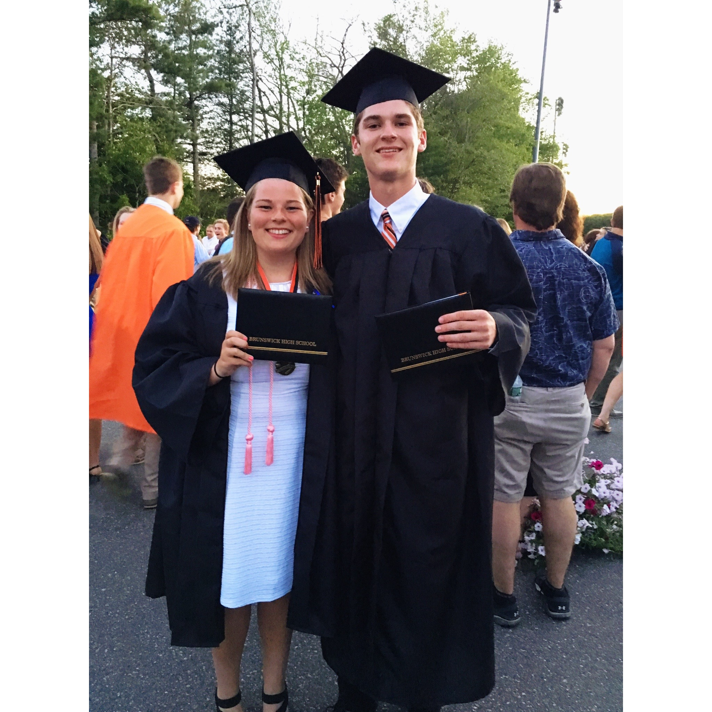
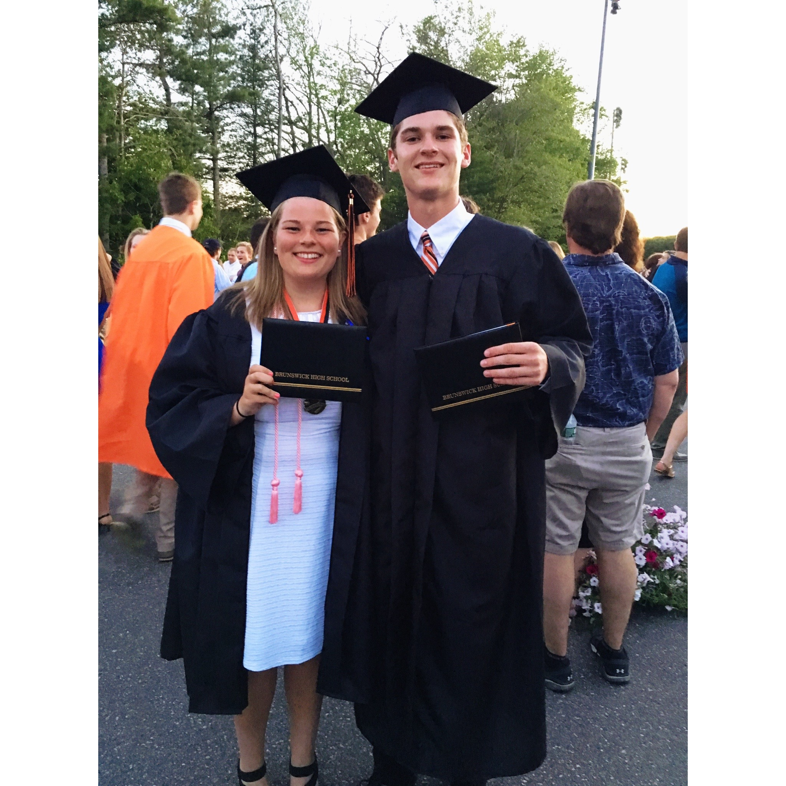

Friends have always been a huge part of my life. The first picture on this page is of me and my bestfriend, Sarah. Sarah and I became friends when we were in elementary school, and have been bestfriends ever since. She is two years older than me, so for the majority of our school days we were never at the same school together for long. The friends I have made in college have been also been amazing. The friends I have made in college, will for sure be the friends I stay in touch with for a long time after we graduate. A lot of kids from my high school go to UMaine also, so it is nice to have old friends here as well. UMaine has brought me together with so many different types of people, and many of the friends I have made here will be forever friends.